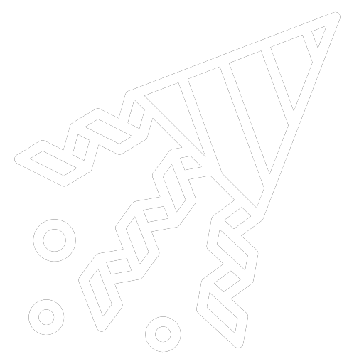
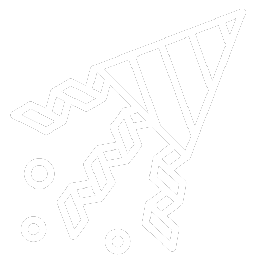
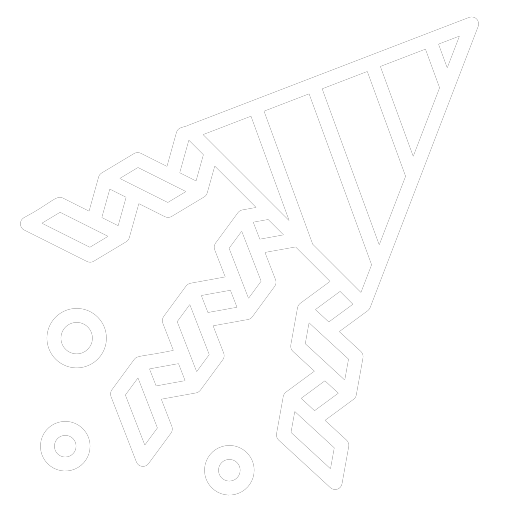
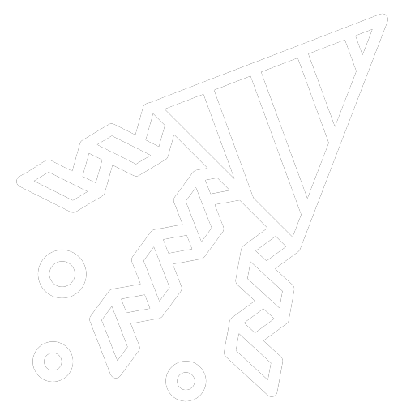

chegar no final.

 
 Logo logo, terá mais enigmas aqui, tenha paciência. Esse não é o final definitivo.
Logo logo, terá mais enigmas aqui, tenha paciência. Esse não é o final definitivo.
Para saber se já foram adicionados mais enigmas, vá para a última fase até o momento (é só voltar), atualize a fase e reintroduza a senha. Se houver mais enigmas, você será redirecionado para a próxima fase; caso contrário, retornará para cá.